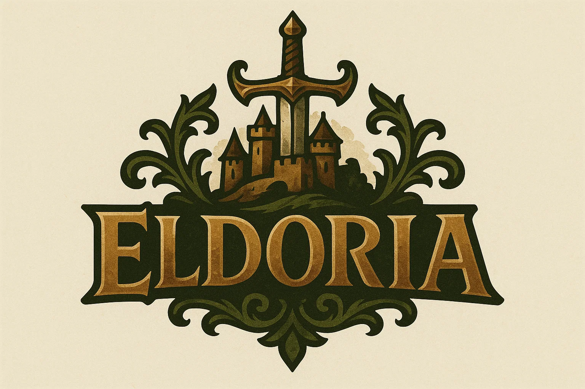

Basé à Bordeaux, je cherche une alternance en développement web.
MaëlLLADO
Étudiant en 2ᵉ année à Ynov Bordeaux, développeur full stack
Je développe des applications web en entier : l’interface, l’API, la base de données, puis la mise en ligne sur mon propre serveur.

Qui je suis
J’ai commencé par les réseaux et la cybersécurité en bac pro. Aujourd’hui je code surtout pour le web, du navigateur jusqu’au serveur. Ce site tourne sur une machine que j’administre : React pour l’interface, une API Express, PostgreSQL, le tout dans Docker derrière Nginx et Cloudflare. J’en modifie le contenu depuis un back-office que j’ai aussi développé.
- Formation
- Ynov Campus Bordeaux, 2ᵉ année
- Diplôme
- Bac pro SN option RISC, mention très bien
- Je cherche
- Une alternance en développement web, dès [À PRÉCISER]
Mon parcours
Lycée professionnel
Cybersécurité et réseaux
Mes premiers pas en informatique
Stage
Maintenance et boutique
Support et matériel informatique
Stage
Snark Factory
Développement web
Aujourd’hui
Ynov Campus, 2ᵉ année
Étudiant en informatique
Ce que j’ai construit

Face Recognition

CTF

One Piece DLE

Cloud Perso

Tech Talk
Vous recrutez un alternant en développement web ?
Le plus simple est de m’écrire. Mon CV et mes profils sont juste en dessous.
M’écrire